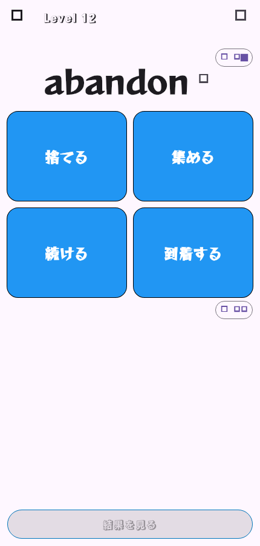
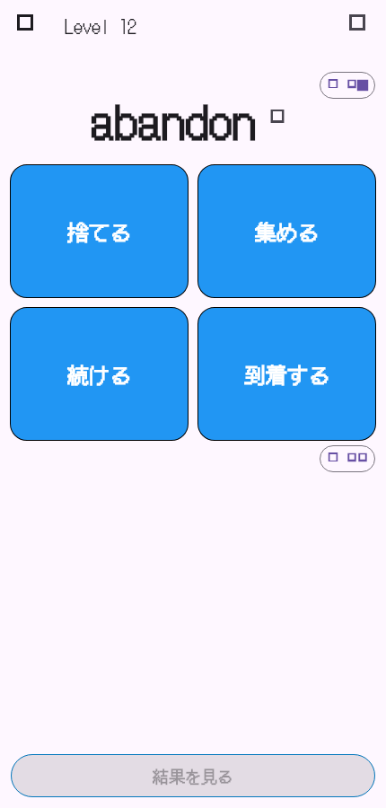
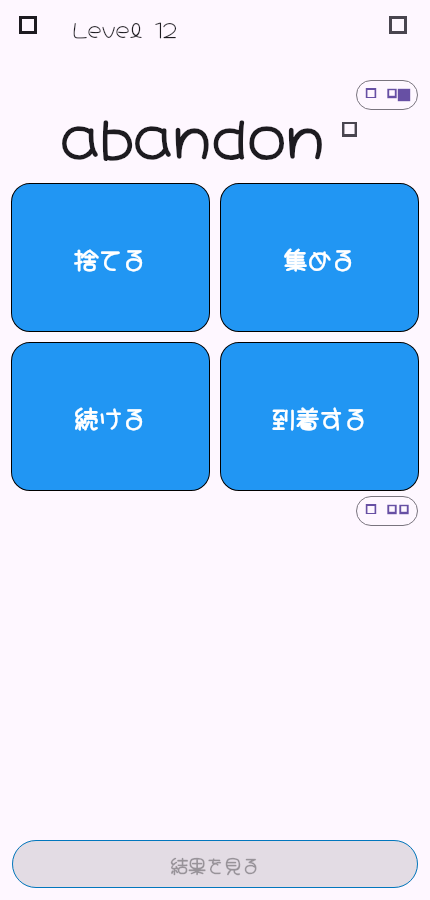
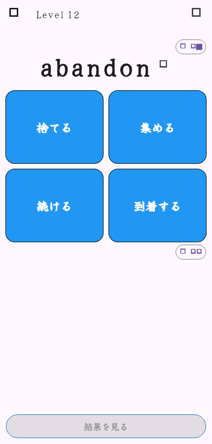

1. 漫画・アクション

Rampart One + Reggae One2. レトロゲーム

DotGothic163. かわいい・絵本

Hachi Maru Pop4. 和風・怪異

Yuji SyukuFlutterが実際のAlice問題画面を430×900で描画した比較です。Webフォントの代替表示ではなく、アプリに同梱した実フォントを使用しています。

Rampart One + Reggae One
DotGothic16
Hachi Maru Pop
Yuji Syuku